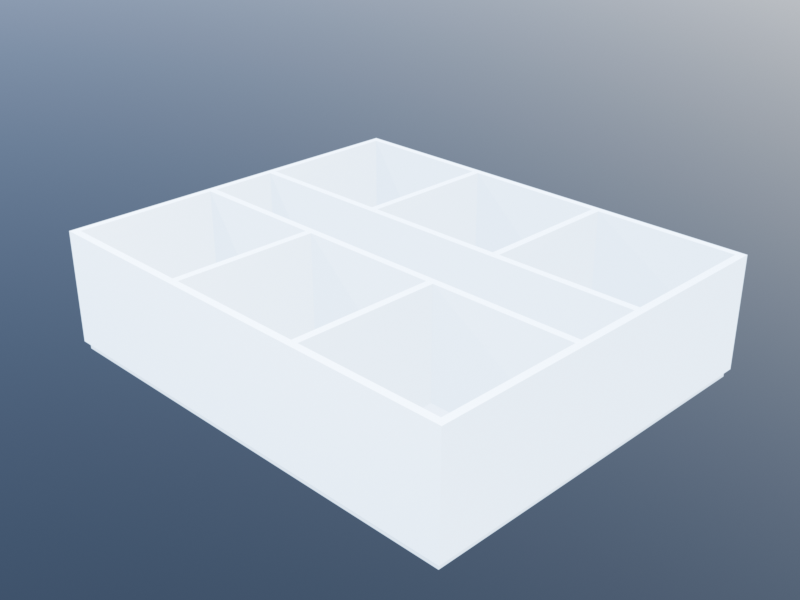

Isenberg Top-Down
This tutorial builds the same arc-shaped Isenberg School of Management Business Innovation Hub as the companion Isenberg Bottom-Up tutorial — but the geometry is declared top-down as a tree of SpaceDesc nodes rather than constructed room by room.
The same plan produced by a top-down recipe:

The centrepiece is polar_envelope: a SpaceDesc leaf that describes an annular-sector volume around a centre point. Once you have an envelope, the usual subdivision operators apply:
subdivide_radialandsubdivide_angularsplit an envelope into concentric bands or angular wedges by proportional ratios.partition_angularandpartition_radialsplit an envelope into equal parts along one axis.refineandassigndrill into a named zone of a subdivision —refinereceives a freshpolar_envelopesized to the zone, so polar subdivision composes recursively just like rectangular subdivision does.abovestacks two subtrees vertically; polar subtrees ignore the Cartesian(x, y)cursor and thread onlyz, so stacking floors works without any coordinate gymnastics.
See Top-Down Subdivision for the rectangular analogues of these operators — the polar versions follow the exact same pattern.
Parameters
using KhepriBase
center = u0()
r_inner = 10.0
r_outer = 25.0
arc_start = 0.0
projection = π # where the ground-floor lobby begins
arc_end = 3π/2
n_rooms = 18 # angular wedges per band per floor
corridor_span = 2.0 # radial thickness of the corridor band
floor_h = 3.0
n_floors = 3
n_arc = 0 # 0 = arc-native; >0 = polygonal fallbackThe n_arc parameter controls how each polar sector's arcs are represented. The default, n_arc = 0, keeps them as true circular arcs (ArcPath under the hood) — the wall-graph classifier uses cocircular_overlap to find shared sub-arcs between neighbouring sectors, the resolver merges co-circular runs into single ArcPath walls, and BIM backends (AutoCAD, Revit) emit native curved walls instead of polyline approximations. Passing n_arc > 0 forces polygonal discretisation (each arc becomes n_arc line segments) — useful for non-BIM backends that can't render curves, or for comparing against the legacy output.
The radial split is expressed directly as proportions. The inner band gets roughly 40% of the radial span, the corridor 10%, the outer band 50%:
r_span = r_outer - r_inner
inner_p = ((r_span - corridor_span) / 2) / r_span
outer_p = inner_p
corridor_p = corridor_span / r_span
# (inner_p, corridor_p, outer_p) ≈ (0.43, 0.13, 0.43), and sum to 1The upper-floor description
An upper floor is a polar envelope spanning the full arc, split radially into three bands, with the inner and outer bands further partitioned into n_rooms angular wedges. The corridor zone is assigned the :corridor kind so downstream tools can find it by name.
upper_floor() =
polar_envelope(center, r_inner, r_outer, arc_start, arc_end, floor_h;
id = :floor, n_arc = n_arc) |>
d -> subdivide_radial(d,
[inner_p, corridor_p, outer_p],
[:inner_band, :corridor_band, :outer_band]) |>
d -> refine(d, :inner_band,
inner -> partition_angular(inner, n_rooms, :inner)) |>
d -> refine(d, :outer_band,
outer -> partition_angular(outer, n_rooms, :outer)) |>
d -> refine(d, :corridor_band,
corr -> partition_angular(corr, n_rooms, :corridor))The corridor band is partitioned angularly into n_rooms wedges too, rather than left as one long arc. That keeps every sector's polygon discretisation aligned — each room and its facing corridor slice share the same vertex on the intermediate radius, so the adjacency detector classifies the edge as shared and build emits a single wall between them.
Every one of those pipe stages returns a new SpaceDesc, so the expression reads top-to-bottom like a spec:
take the polar envelope, split it radially into three bands, refine the inner band into angular partitions, refine the outer band the same way, label the middle band as the corridor.
The ground floor
The ground floor is the same envelope, but the projection zone (the outer wedge beyond π) is left open as the entrance lobby rather than filled with rooms. That is expressed as an angular subdivision first, then the usual radial split applied only to the semicircular piece.
ground_floor() =
polar_envelope(center, r_inner, r_outer, arc_start, arc_end, floor_h;
id = :ground, n_arc = n_arc) |>
d -> subdivide_angular(d,
[(projection - arc_start) / (arc_end - arc_start),
(arc_end - projection) / (arc_end - arc_start)],
[:semi, :projection]) |>
d -> refine(d, :semi,
semi -> subdivide_radial(semi,
[inner_p, corridor_p, outer_p],
[:inner_band, :corridor_band, :outer_band]) |>
dd -> refine(dd, :inner_band,
inner -> partition_angular(inner, n_rooms, :inner)) |>
dd -> refine(dd, :outer_band,
outer -> partition_angular(outer, n_rooms, :outer)) |>
dd -> refine(dd, :corridor_band,
corr -> partition_angular(corr, n_rooms, :corridor))) |>
d -> assign(d, :projection, :lobby)The inner refinement semi -> … mirrors upper_floor exactly: angular partition only runs over the semicircular span, with the polar envelope handed in by refine carrying the reduced theta_start..theta_end range.
Stacking the storeys
The upper-floor description uses the same room ids on every floor (inner_1..inner_n, outer_1..outer_n, …), so stacking two copies verbatim would collide on the id dictionary. repeat_unit with axis = :z solves that: each copy is placed at the next storey elevation and its placed spaces are scoped under a unit_i/ prefix so ids stay unique.
uppers = repeat_unit(upper_floor(), n_floors - 1; axis = :z)
building = ground_floor() ^ uppers
plan = layout(building)plan is a three-storey Layout. The ground storey carries 2 * n_rooms + 2 spaces — inner and outer rooms on the semicircular half, the corridor_band, and the projection lobby. Each upper storey carries 2 * n_rooms + 1 spaces, addressable under the unit_1/ and unit_2/ prefixes.
Adding connections
Geometry declared top-down still needs door and window placement, and that is the natural place to drop back to the Level-1 API. The placed spaces are addressable by name via find_space, and add_door / add_window take those handles.
The placed ids carry scope. The ground floor's rooms come out of refine, which replaces a zone in-place rather than introducing a new prefix — so ids stay flat (:inner_5, :corridor_5). The upper floors come out of repeat_unit(…; axis=:z), which does inject a unit prefix (:unit_1/inner_5). A small helper per storey bridges the two:
storey_prefix(i) = i == 1 ? "" : "unit_$(i - 1)/"
for (i, _) in enumerate(plan.storeys)
pref = storey_prefix(i)
# Doors: every inner and outer room onto its corresponding corridor slice
for j in 1:n_rooms
corr = find_space(plan, Symbol(pref, "corridor_", j))
inner = find_space(plan, Symbol(pref, "inner_", j))
outer = find_space(plan, Symbol(pref, "outer_", j))
isnothing(corr) && continue
isnothing(inner) || add_door(plan, inner, corr)
isnothing(outer) || add_door(plan, outer, corr)
end
# Glue corridor slices to each other so the corridor reads as one path
for j in 1:(n_rooms - 1)
ca = find_space(plan, Symbol(pref, "corridor_", j))
cb = find_space(plan, Symbol(pref, "corridor_", j + 1))
(isnothing(ca) || isnothing(cb)) && continue
add_arch(plan, ca, cb)
end
# Exterior windows on every outer room
for j in 1:n_rooms
sp = find_space(plan, Symbol(pref, "outer_", j))
isnothing(sp) && continue
p = sp.props._polar
θ_mid = (p.theta_start + p.theta_end) / 2
add_window(plan, sp, :exterior,
loc = center + vpol(r_outer, θ_mid),
family = window_family(width=1.4, height=1.5))
end
end
# Front door on the lobby's outer facade
lobby = find_space(plan, :projection)
θ_door = (projection + arc_end) / 2
add_door(plan, lobby, :exterior, loc = center + vpol(r_outer, θ_door))add_arch between adjacent corridor slices suppresses the wall that would otherwise separate them — the build step emits one continuous chain of wall along the radial partition between any two corridor pieces where no arch is declared, and nothing at all between arched neighbours.
The Space carries its own polar metadata in sp.props._polar — the same (center, r_inner, r_outer, theta_start, theta_end, n_arc) tuple the envelope was built from — so downstream code can reason about where the space lives without re-parsing the SpaceDesc tree.
Build
walls, doors, windows, slabs = build(plan)
realize(plan, TextBackend()) # or realize(plan) once a Khepri backend is activebuild compiles every storey through the wall-graph chain resolver, producing one wall per shared edge (curved and radial alike), one door per add_door, one window per add_window at the default 0.9 m sill, and one slab per room.
What this approach is good at
- Uniform rooms from one declaration.
partition_angular(inner, n_rooms, :inner)produces eighteen identical wedges from a single line. Changingn_roomsreshapes the entire building. - Recursive structure. The ground floor reuses the same inner-band / corridor / outer-band subdivision as the upper floors, nested inside an angular carve-out for the lobby.
refinemakes that nesting transparent: the inner subtree sees a polar envelope and doesn't care where it came from. - One tree, one shape. The whole building's geometry is a single
SpaceDescvalue. Passing a different value tolayoutgives a different building — great for generating families of variants the way the original Isenberg tutorial does with parametric variations.
What the bottom-up approach does better
- Room-by-room overrides. A mechanical room at a specific angular position, a stair that only exists on certain floors, or a pair of neighbouring rooms with a shared sliding wall — all much easier to express as one more
add_spacecall than as a special case in the subdivision tree. The Isenberg Bottom-Up tutorial shows that pattern.
Exercises
Asymmetric wings. Change the inner-band angular partition to
partition_angular(inner, 12, :inner)while the outer band stays atn_rooms, giving larger rooms on the courtyard side.Double radial corridor. Replace the three-band
subdivide_radialwith a five-band split[0.3, 0.1, 0.2, 0.1, 0.3]and assign both narrow bands to:corridor, producing a double-loaded building with two corridors.Projection-with-rooms. In
ground_floor(), drop the finalassign(:projection, :lobby)and instead refine the projection with the sameinner_band / corridor_band / outer_bandsubdivision used on upper floors. The lobby disappears; the projection zone is now a third band of rooms.